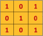
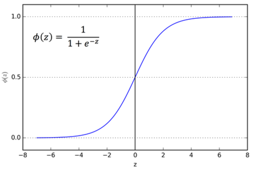

Problem
One of the major environmental hazards confronting Ghana and many other countries is the management of plastic waste. As of 2017, the United Nations Development Programme(UNDP) stated that Ghana produces 1.7 million tonnes of plastic waste annually. It is estimated that only 2 percent of the waste is recycled despite enormous opportunities. This has been attributed to inadequate investment by the government and private sector as well as limited capacity in the business of recycling.
It is for this reason that all around the country, drains, rivers, farms and oceans are inundated with plastic waste. The problem with the management of plastic waste appears to be overwhelming because no solution has yet been found.
Tools I used for this project
Software

Python
Programming Language

Tensorflow
Tensorflow Is A Free And Open-Source Software Library For Dataflow And Differentiable Programming Across A Range Of Tasks. It Is A Symbolic Math Library, And Is Also Used For Machine Learning Applications Such As Neural Networks

Keras
Neural Network Library
Numpy
A Library For Scientific Computing And Working With Mulitdimensional Arrays

Matplotlib
Matplotlib Is A Comprehensive Library For Creating Static, Animated, And Interactive Visualizations In Python.

Matplotlib
OpenCV Is A Library Of Programming Functions Mainly Aimed At Real-Time Computer Vision
Hardware

Raspberry Pi
Single Board Computer

Raspberry Pi Camera
H Bridge Motor Driver L298N
Ultrasonic Sensor

Resistors
Breadboard
Servo Motors

Male To Female Jumper Wires
Bins
I would like to demistify some buzzwords about machine learning so you can actually have an understading of how my project works
Machine learning is the field of study that gives computers the ability to learn without being explicitly programmed.
It is a branch of artificial intelligence based on the idea that computers can learn from data, identify patterns and make decisions with minimal human intervention.

There are three types of machine learning:
- Supervised Learning
- Unsupervised Learning
- Reinforcement Learning
In supervised learning, we are given a data set and already know what our correct output should look like, having the idea that there is a relationship between the input and the output. Supervised learning problems are categorized into “regression” and “classification” problems. In a regression problem, we are trying to predict results within a continuous output, meaning that we are trying to map input variables to some continuous function. In a classification problem, we are instead trying to predict results in a discrete output. In other words, we are trying to map input variables into discrete categories.
Unsupervised learning allows us to approach problems with little or no idea what our results should look like. We can derive structure from data where we don’t necessarily know the effect of the variables. We can derive this structure by clustering the data based on relationships among the variables in the data. With unsupervised learning, there is no feedback based on the prediction. Example: Clustering: Take a collection of 1,000,000 different genes, and find a way to automatically group these genes into groups that are somehow similar or related by different variables, such as lifespan, location, roles, and so on.
In Reinforcement learning, the neural network is reinforced for positive results, and punished for a negative result, forcing the neural network to learn over time. Example: Consider teaching a dog a new trick. You cannot tell it what to do, but you can reward/punish it if it does the right/wrong thing. It has to figure out what it did that made it get the reward/punishment. We can use a similar method to train computers to do many tasks, such as playing backgammon or chess, scheduling jobs, and controlling robot limbs.

A neural network is taught to perform a task by making it analyze training data which have been labeled(Supervised Learning). A common example of a task for a neural network using deep learning is an object recognition task, where the neural network is presented with a large number of objects of a certain type such as images or tensors, and the algorithm by analyzing the recurring patterns in the presented data, learns to categorize new data.
At the core of the neural networks, we have neurons where computation for an output is executed. A neuron receives one or more inputs from the neurons in the previous layer. If the neurons are in the first hidden layer, they will receive the data from the input data stream. In the biological neuron, an electric signal is given as an output when it receives an input with a higher influence. To map that functionality in the mathematical neuron, we need to have a function that operates on the sum of input multiplied by the corresponding weights and responds with an appropriate value based on the input. The function that works on the computed input data is called the activation function.

An activation function is the function that takes the combined input as shown in the preceding illustration, applies a function on it, and passes the output value, thus trying to mimic the activate/deactivate function. The activation function, therefore, determines the state of a neuron by computing the activation function on the combined input. A quick thought crossing your mind might be as follows: why do we really need an activation function to compute the combined output , when we could just pass the value as the final output? There are several problems here. Firstly, the range of the output value would be -Infinity to + Infinity, where we won’t have a clear way of defining a threshold where activation should happen. Secondly, the network will in a way be rendered useless, as it won’t really learn. This is where a bit of calculus and derivatives come into the picture. To simplify the story, we can say that if your activation function is a linear function (basically no activation), then the derivative of that function becomes 0; this becomes a big issue because training with the backpropagation algorithm helps give feedback to the network about wrong classifications and thereby helps a neuron to adjust its weights by using a derivative of the function. If that becomes 0, the network loses out on this learning ability. To put it another way, we can say there is really no point of having the DNN, as the output of having just one layer would be similar to having n layers. To keep things simple, we would always need a nonlinear activation function (at least in all hidden layers) to get the network to learn properly
The loss function is the metric that helps a network understand whether it is learning in the right direction. To frame the loss function in simple words, consider it as the test score you achieve in an examination. Say you appeared for several tests on the same subject: what metric would you use to understand your performance on each test? Obviously, the test score. Assume you scored 56, 60, 78, 90, and 96 out of 100 in five consecutive language tests. You would clearly see that the improving test scores are an indication of how well you are performing. Had the test scores been decreasing, then the verdict would be that your performance is decreasing and you would need to change your studying methods or materials to improve. Similarly, how does a network understand whether it is improving its learning process in each iteration? It uses the loss function, which is analogous to the test score. The loss function essentially measures the loss from the target. Say you are developing a model to predict whether a student will pass or fail and the chance of passing or failing is defined by the probability. So, 1 would indicate that he will pass with 100% certainty and 0 would indicate that he will definitely fail. The model learns from the data and predicts a score of 0.87 for the student to pass. So, the actual loss here would be 1.00 – 0.87 = 0.13. If it repeats the exercise with some parameter updates in order to improve and now achieves a loss of 0.40, it would understand that the changes it has made are not helping the network to appropriately learn. Alternatively, a new loss of 0.05 would indicate that the updates or changes from the learning are in the right direction.
The optimizer function is a mathematical algorithm that uses derivatives, partial derivatives, and the chain rule in calculus to understand how much change the network will see in the loss function by making a small change in the weight of the neurons. The change in the loss function, which would be an increase or decrease, helps in determining the direction of the change required in the weight of the connection.

Convolutional neural networks (CNNs) emerged from the study of the brain’s visual cortex, and they have been used in image recognition since the 1980s. In the last few years, thanks to the increase in computational power and the amount of available training data. CNNs have managed to achieve superhuman performance on some complex visual tasks. They power image search services, self-driving cars, automatic video classification systems, and more. Moreover, CNNs are not restricted to visual perception: they are also successful at other tasks, such as voice recognition or natural language processing (NLP).
ConvNets derive their name from the “convolution” operator. The primary purpose of Convolution in case of a ConvNet is to extract features from the input image. Convolution preserves the spatial relationship between pixels by learning image features using small squares of input data.

A convolutional neural network is one that has convolutional layers. A general neural network is inspired by a human brain but a convolutional neural network is inspired by the visual cortex system, in humans and other animals. As the name suggests, this layer applies the convolution with a learnable filter (a.k.a. kernel), as a result the network learns the patterns in the images: edges, corners, arcs, then more complex figures. Convolutional neural network may contain other layers as well, commonly pooling and dense layers.

A convolutional neural network (CNN) is a neural network where one or more of the layers employs a convolution as the function applied to the output of the previous layer.
Every image can be considered as a matrix of pixels.
Consider a 5 x 5 image whose pixel values are only 0 and 1 (note that for a grayscale image, pixel values range from 0 to 255, the green matrix below is a special case where pixel values are only 0 and 1):
Also, consider another 3 x 3 matrix as shown below:
Then, the Convolution of the 5 x 5 image and the 3 x 3 matrix can be computed as shown in the animation below:
Take a moment to understand how the computation above is being done. The orange matrix is slided over the original image (green) by 1 pixel (also called ‘stride’) and for every position, we compute element wise multiplication (between the two matrices) and add the multiplication outputs to get the final integer which forms a single element of the output matrix (pink). Note that the 3×3 matrix “sees” only a part of the input image in each stride.
In CNN terminology, the 3×3 matrix is called a ‘filter‘ or ‘kernel’ or ‘feature detector’ and the matrix formed by sliding the filter over the image and computing the dot product is called the ‘Convolved Feature’ or ‘Activation Map’ or the ‘Feature Map‘. It is important to note that filters acts as feature detectors from the original input image.
It is evident from the animation above that different values of the filter matrix will produce different Feature Maps for the same input image. As an example, consider the following input image:

In the table below, we can see the effects of convolution of the above image with different filters. As shown, we can perform operations such as Edge Detection, Sharpen and Blur just by changing the numeric values of our filter matrix before the convolution operation – this means that different filters can detect different features from an image, for example edges, curves etc.

Patial pooling (also called subsampling or downsampling) reduces the dimensionality of each feature map but retains the most important information. Spatial Pooling can be of different types: Max, Average, Sum etc. In case of Max Pooling, we define a spatial neighborhood (for example, a 2×2 window) and take the largest element from the rectified feature map within that window. Instead of taking the largest element we could also take the average (Average Pooling) or sum of all elements in that window. In practice, Max Pooling has been shown to work better. The figure below shows an example of Max Pooling operation on a Rectified Feature map (obtained after convolution + ReLU operation) by using a 2×2 window.
The 2 x 2 window is slided by 2 cells (also called ‘stride’) and take the maximum value in each region
The function of Pooling is to progressively reduce the spatial size of the input representation. In particular, pooling
- makes the input representations (feature dimension) smaller and more manageable
- reduces the number of parameters and computations in the network, therefore, controlling overfitting
- makes the network invariant to small transformations, distortions and translations in the input image (a small distortion in input will not change the output of Pooling – since we take the maximum / average value in a local neighborhood).
- helps us arrive at an almost scale invariant representation of our image (the exact term is “equivariant”). This is very powerful since we can detect objects in an image no matter where they are located
The overall training process of the Convolution Network may be summarized as below:
- Step1: Initialize all filters and parameters / weights with random values
- Step2: The network takes a training image as input, goes through the forward propagation step (convolution, ReLU and pooling operations along with forward propagation in the Fully Connected layer) and finds the output probabilities for each class. Lets say the output probabilities for the waste materials are [0.2, 0.4, 0.1, 0.3] Since weights are randomly assigned for the first training example, output probabilities are also random.
- Step3: Calculate the total error at the output layer Total Error = ∑ ½ (target probability – output probability) ²
- Step4: Use Backpropagation to calculate the gradients of the error with respect to all weights in the network and use gradient descent to update all filter values / weights and parameter values to minimize the output error. The weights are adjusted in proportion to their contribution to the total error. When the same image is input again, output probabilities might now be [0.1, 0.1, 0.7, 0.1], which is closer to the target vector [0, 0, 1, 0]. This means that the network has learnt to classify this particular image correctly by adjusting its weights / filters such that the output error is reduced. Parameters like number of filters, filter sizes, architecture of the network etc. have all been fixed before Step 1 and do not change during training process – only the values of the filter matrix and connection weights get updated.
- Step5 Repeat steps 2-4 with all images in the training set.
When a new (unseen) image is input into the ConvNet, the network would go through the forward propagation step and output a probability for each class (for a new image, the output probabilities are calculated using the weights which have been optimized to correctly classify all the previous training examples). If our training set is large enough, the network will (hopefully) generalize well to new images and classify them into correct categories.
Solution
My approach to solve this problem was by creating a convolutional neural network in keras and use a raspberry pi ,camera, motors, bins to segment the waste(plastic and metal waste) into two different bins.
For the activation function I used a combination of sigmoid and relu
A sigmoid function renders the output between 0 and 1. The nonlinear output (s shaped as shown) improves the learning process very well, as it closely resembles the following principle—lower influence: low output and higher influence: higher output—and also confines the output within the 0-to-1 range.
I used the Adaptive Moment Estimation(Adam) optimizer. This optimization technique computes an adaptive learning rate for each parameter. It defines momentum and variance of the gradient of the loss and leverages a combined effect to update the weight parameters. The momentum and variance together help smooth the learning curve and effectively improve the learning process. The math representation can be simplified in the following way: Weights = Weights – (Momentum and Variance combined)
I fed the convolutional neural network with image data I took pictures of and collected from kaggle.com
I trained the convnet over 100 epochs
In the first 10 epochs I had a loss of 0.4064 and an accuracy of 81%.
In the last 10 epochs, I had a loss of 0.0049 and an accuracy of 100%
This graph shows how my model peformed over the span of 100 epochs which lasted for about 7 minutes. I trained the model on my Nvidia GPU.
A prediction greater than 0.5 is likely to be a metal whiles a prediction less than 0.5 is likely to be a plastic.
Final Results:
The world is gearing towards technology Machine Learning and AI continues to be ever relevant in our lives as it solves all of our problems. From facial recognition, to self driving cars and even the algorithms of social media networks, machine learning is behind all these breakthroughs and more. Africa was left out of the industrial revolution which is why we're still now building hospitals, schools etc whiles developed countries have all they need. Africa is slowly being left out of the technological revolution too because of inadequate skilled persons in technology and computer science. But people like me, have a dream for Africa. To become one of the best and go head to head with the technological giants in the world thereby accelerating the development of technology in Africa and making Africa, the silicon valley of the world.
Unfortunately, due to Covid-19, I have not been able to get my hands on some of the hardware products so it's much of a software program for the time being.
About Me
My name is Tariq Sulley. I'm 17 and a student at Presec,Legon. I got interested in programming at a very young age as I was stunned by the power knowing how to progam gives you. It's a real life superpower which allows you to create anything you can imagine once you know how to logically achieve that. With my skills, I want to make the world a better place with my own very little contributions and research more into machine learning and AI in future. I program in Python, Javascript(react) , C and Java.